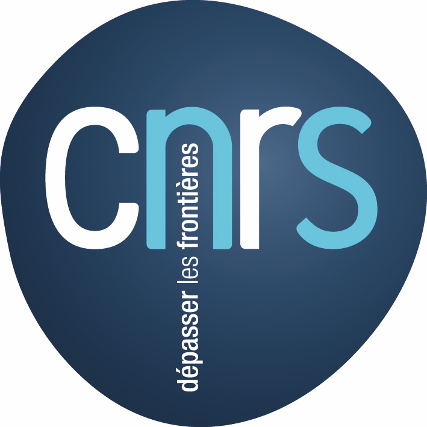
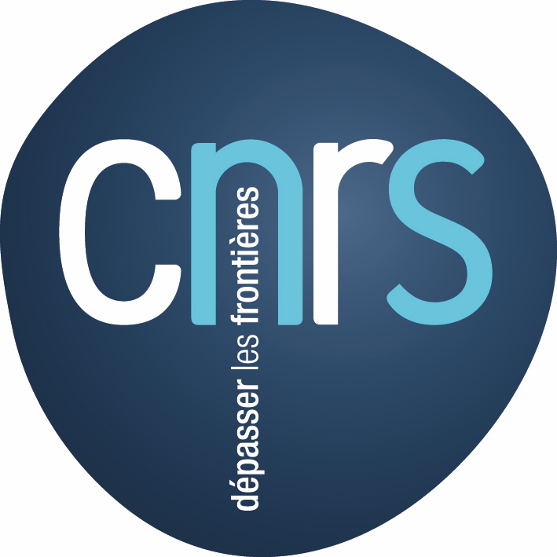

The deadline for receipt of papers is Saturday, 31 January 2015 midnight EST. Notification of acceptance will be emailed to applicants in the end of February 2015. Presenters whose papers are chosen will be invited to revise their article and submit a final version for the 1st April 2015.
Papers must be written in english and must comply with the latex template or word templates.
Full papers must be submitted (not abstracts). Papers length should be between 4 and 12 pages.
Submissions should be made via the EasyChair plateform.
Proposals may be accepted as oral presentation or as poster.
The duration of an oral presentation will be 15 minutes followed by a question period of 5 minutes. Standard presentation equipment will be provided including a video projector, CD player, and stereo sound system.
Conference language is English.
For any question, please contact : tenor2015[at]tenor-conference.org

 Eleanor Selfridge-Field, Consulting Professor Music, is a musicologist
and digital humanities scholar at Stanford University, where she heads the
Center for Computer Assisted Research in the Humanities, an affiliate of the
Packard Humanities Institute. She is the author of 16 books in digital
musicology and 5 in historical musicology. Her teaching, most of it in
collaboration with Craig Sapp, focuses on music representation systems and
music-information retrieval.
Eleanor Selfridge-Field, Consulting Professor Music, is a musicologist
and digital humanities scholar at Stanford University, where she heads the
Center for Computer Assisted Research in the Humanities, an affiliate of the
Packard Humanities Institute. She is the author of 16 books in digital
musicology and 5 in historical musicology. Her teaching, most of it in
collaboration with Craig Sapp, focuses on music representation systems and
music-information retrieval.
 
